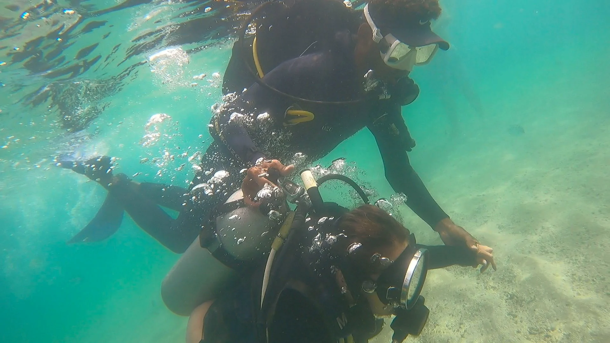

Mergulho de Batismo com Cilindro
Não precisa saber nadar. Você aprende a respirar na superfície e desce conduzido lado a lado pelo instrutor nos corais.
Equipamento completo
Jangada ida e volta
1 instrutor por pessoa/dupla